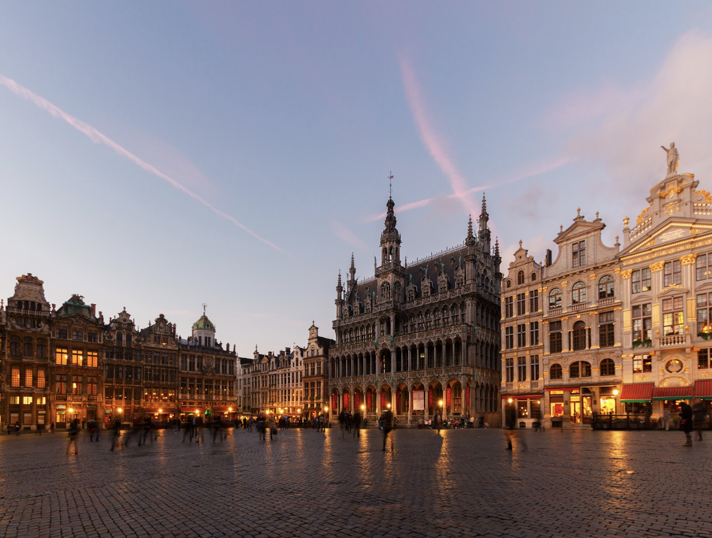

Cookie
Monster
Hard-hitting research on
European Tech Policy.
About Us
Our Mission
We are a Brussels-based research organization specializing in European tech policy.
We navigate the complex world of EU internet policy with clear, jargon-free analysis and data-backed storytelling.
We Prioritize Storytelling
Our research reports are clear and concise. We move beyond technical jargon to explain the big picture, backing up every policy suggestion with hard, verifiable facts.
Reports
The Team
William Echikson
Founder and Director
William Echikson is the founder and director of E+Europe, a Brussels-based consultancy specializing in communications and policy support to technology companies and public authorities on Internet policy issues in Europe. He is also an Associate Senior Fellow and Head of the Digital Forum at the Centre for European Policy Studies in Brussels.
Before founding E+Europe, Mr. Echikson worked for six and a half years at Google in Brussels. He ran corporate communications for Europe, the Middle East, and Africa, launched the company's Europe blog, and led its efforts around data center government affairs and Internet freedom issues.
Clara Riedenstein
Researcher
Clara Riedenstein is a tech policy analyst and writer whose work examines how emerging technologies shape existing political, legal, and social institutions. She is a researcher with the Tech Policy Program at the Center for European Policy Analysis (CEPA), where she regularly contributes to the online journal Bandwidth.
Her work has been featured in DW, Tech Policy Press, and European View. Clara holds an MSc in Political Theory from Oxford University, where she studied as a C. Douglas Dillon Scholar and focused on the implications of large language models for theories of jurisdiction. She also received a BA from Oxford, where she was awarded the Henry Wilde Prize in Philosophy (proxime accessit).
Anda Bologa
Researcher
Anda Bologa is a seasoned artificial intelligence and digital policy expert and one of the '35 under 35' tech leaders recognized by the Barcelona Centre for International Affairs. During her tenure at the European Union Delegation to the United Nations, she was responsible for high-level negotiations on artificial intelligence resolutions and the United Nations Global Digital Compact. Her background includes legal work on technology and business at Wardyński & Partners, handling digital platform cases at the European Court of Justice during her time with the Legal Service of the European Commission.
A Fulbright scholar, Anda holds Master of Laws degrees in Information Technology Law and Intellectual Property Law from Fordham University and in International Arbitration from Bucharest University, along with a Master’s degree from the College of Europe. She is an editor of Revue Européenne du Droit.
Clients & Partners


Connect
Bill Echikson
bechikson@gmail.comChemin Privé t’en Cortenbosch 18a
1180 Brussels
Belgium
